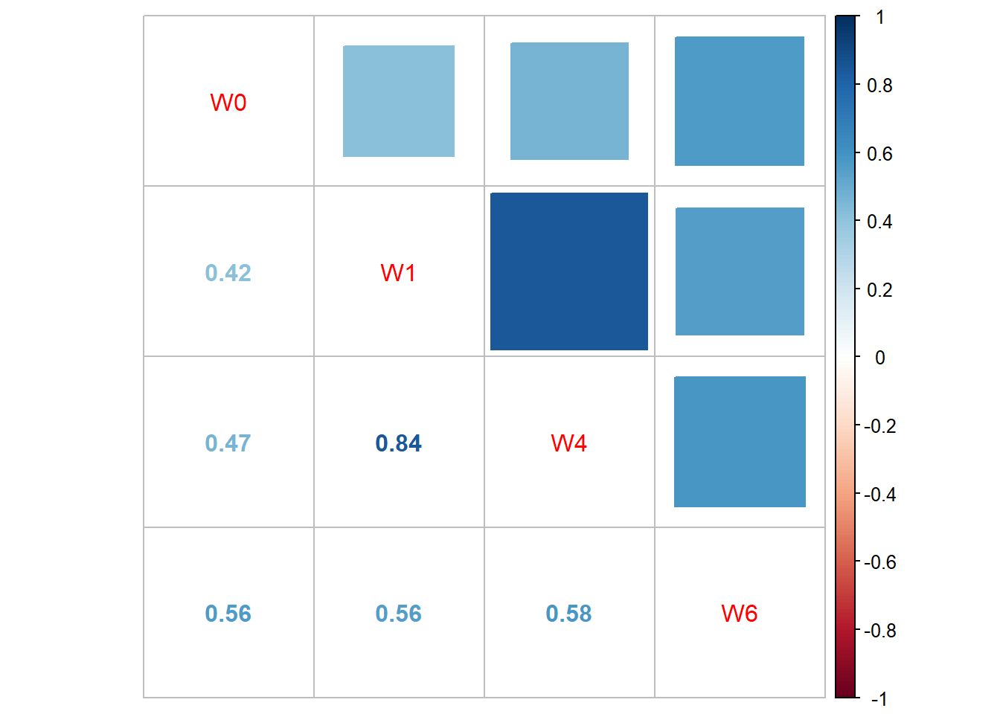

\(Y\in \mathbb{R}^{n\times 1}\) is the response variable (a continuous random vector)
\(X\in \mathbb{R}^{n\times p}\) is the covariate matrix (Note that the first column is often \(1_n\) – the column vector of ones)
\(X_i\in \mathbb{R}^{p\times 1}\) is the \(i^{th}\) observed explanatory variable \((i=1, \ldots, n)\) (not a random variable, in the sense that we condition on it)
\(\beta\in \mathbb{R}^{p\times 1}\) is the coefficient vector
\(\epsilon\in\mathbb{R}^n\) is the random error (continuous random variable)
The key assumptions of the (normal) MLR are that
\(\epsilon\) is multivariate normally distributed
\(E(\epsilon)=0\)
\(Cov(\epsilon)=\sigma^2 I_n\)
\(Y|X=X\beta+\epsilon\)
As such, it is critical that when applying MLR models, the observations are independent. However, there are many, many problems where the data contains dependent observations. If we have data that can be split into mutually independent clusters, then we call this clustered data.
1.1.2 An example
Consider the following simple example. Suppose a study wishes to prove/disprove the following: Does Ozempic cause sustained weight loss over time?
What type of data would we need to answer this question? We might start with the question: Can we collect data that would allow us to answer this question with a MLR model?
Could we:
Take a sample of individuals on Ozempic and measure their weight? – No. How do we determine if their weight has decreased since starting it?
Take a sample of individuals both on and not on Ozempic at a point in time, and compare their weights? – No. How can we rule out the fact that these are different populations?
It seems that this question could not be reliably answered using the above suggested methods. We would need to be able to follow individuals, starting when they begin Ozempic, recording their weights, and continue following them for a period of time. We might have data that looks like:
Month 1
Month 2
Month 3
Month 4
…
360
355
350
340
…
225
222
224
225
…
288
270
253
260
…
We could simply compare the weights in month 1 to the last month measured, and apply a one-sample t-test. What if the patients lose weight in the first 6 months and then gain it back? This would not be captured by such a model. We could run one t-test for each month, but of course then the type-1 error would be very large.
It is better to model the weights of patients on Ozempic over time. Inspired by the Normal MLR model, we might posit that patient \(i\)s weight at time \(j\) is governed by the following equation:
\[Y_{ij}=\beta_0+\beta_{1}t_j+\epsilon_{ij}.\] with \(\epsilon_{ij}\sim\mathcal{N}(0,\sigma^2)\). Now, if we want to apply the Normal MLR model, we would need to assume \(\epsilon_{ij}\perp\epsilon_{\ell k}\) when \(ij\neq\ell k\) . Is this reasonable? This would implies that \(Y_{ij}\perp Y_{ij+1}\), i.e., a patients weight in month \(j\) is independent of their weight in month \(j+1\). This is, of course unreasonable. However, it would be reasonable to assume that \(Y_{ij}\perp Y_{\ell k}\) when \(\ell\neq i\). This is an example of clustered data. Here the clusters are the patients.
It is safe to assume that a patient’s weight at a given time is unrelated to another patient’s weight at any given time
However, a patients weight a given time is related to their past and future weights; the within patient weights are dependent.
Therefore, a better assumption might be that the \[Y_{ij}=\beta_{0i}+\beta_{1}t_j+\epsilon_{ij}.\]
where \(\beta_{0i}\) are now random variables, where there exists one per patient. The coefficients \(\beta_{0i}\) contain the dependence of the weight within individuals, and allow us to model the random errors as independent: \(Cov(\epsilon)=\sigma^2 I\). This is only one way to model the within-patient dependence between patients.
Example 1.1 Testing this theory…
Simplify the correlation between \(Y_{ik}\) and \(Y_{ij}\) in this model, and in the Normal MLR (the Normal MLR is the MLR, with the added assumption that the errors are normally distributed. Compare the results.
Solution:
Done in lecture.
The previous example is a longitudinal study, which is a sub-type of the more general clustered data. A longitudinal study is a research study in which subjects are followed over time. Typically this involves repeated measurements of the same variables. Longitudinal studies differ from cross-sectional studies and time series studies. Cross-sectional studies have no clusters, and time series follow one ore more variates over time. The random errors in a time series may be correlated.
Longitudinal studies are useful for:
detecting changes in outcomes, both at the population and individual level,
assessing Longitudinal effects, as compared to cohort effects/cross sectional effects,
understanding different sources of variation, e.g., between- and within-subject variation.
detecting time effects, both directly and as interactions with other relevant factors.
One example of longitudinal data, which we will see later is the TLC trial data:
ID Treatment W0 W1 W4 W6
1 1 P 30.8 26.9 25.8 23.8
2 2 A 26.5 14.8 19.5 21.0
3 3 A 25.8 23.0 19.1 23.2
4 4 P 24.7 24.5 22.0 22.5
5 5 A 20.4 2.8 3.2 9.4
6 6 A 20.4 5.4 4.5 11.9
As mentioned, longitudinal data is one example of clustered data. Clustered data refers to data that can be divided into clusters, such that data within a given cluster are correlated. For longitudinal observations, observations taken from the same subject at different time points are correlated because they belong to the same subject. In general, real world data have a complex dependence structure - can often be fit into this clustered framework.
Another example of clustered data is hierarchical data. These data have clusters within clusters. You could make a super dated inception joke here. For instance, if we wanted to assess how a new way of teaching p-values affects statistical literacy, we could sample universities, then professors, then classes. Here, assuming professors teach multiple sections, we could safely assume that the effect of this new teaching method may differ by university, by professor, and by class. In other words, observations within these groups would be correlated.
1.1.3 Additional challenges with clustered data
Often, clustered data are accompanied by other, additional challenges.
A researcher wishes to evaluate a treatment for reducing high blood pressure. Blood pressures of each subject in the study are measured before and after the treatment. The researcher is also interested in how blood pressures of the subjects change over time after the treatment, so blood pressure is also measured after treatment once a month for 5 months. What are some potential challenges associated with this data? One answer: The data may contain missing values, e.g., drop out. Blood pressure has measurement error – often repeatedly measured.
Example 1.3 Mental distress
Investigate changes in subjects’ mental distress over time in a treatment group and a control group. Mental distress in 239 subjects were measured at baseline, 4, 12, 24, and 60 months, based on their answers to questionnaires. Subjects randomly assigned into two groups: a treatment and a control group. The Global Severity Index (GSI) is used to measure subjects’ distress levels. Other variables such as education, annual income, depression, anxiety, etc. were collected
What are some potential issues for analysis?
Substantial individual variability, Missing data, Outliers, Measurement error? GSI influenced by short-term emotional state
Example 1.4 AIDS Study
The following is an AIDS study designed to evaluate an anti-HIV treatment. 53 HIV infected patients were treated with an antiviral regimen. Viral load (RNA) was repeatedly quantified on days 0, 2, 7, 10, 14, 21, and 28, and weeks 8, 12, 24, and 48 after initiation of the treatment. Immunologic markers known as CD4 and CD8 cell counts were also measured along with viral load, as well as some other variables. Viral load has a lower detection limit of 100, i.e., viral loads below 100 are not quantifiable.
AD1
AD2
AD3
AD4
Other information about this data is given by:
“HIV viral dynamic models model viral load trajectories during an anti-HIV treatment”
“In an HIV viral dynamic model, the relationship between viral load and viral dynamic parameters is often nonlinear, and the viral dynamic parameters often vary substantially across patients.”
Thus, nonlinear mixed effect models
AIDS researchers are also interested in the relationship between viral loads and CD4 counts over time
“CD4 counts are known to be measured with substantial errors, and patients often drop out because of drug side effects or other problems.”
What are some potential issues with this dataset?
different measurement times across patients
different numbers of within-individual measurements across patients
large variation between patients
large variation in the data within each patient
some patients dropping out of the study
some viral loads being censored (i.e., below the limit of detection)
substantial measurement errors in the data
complex long-term trajectories
data being missing at measurement times
Multilevel models: Multilevel models/Hierarchical linear models/Nested data models: Statistical models for “nested clusters”. They contain parameters that vary at more than one level. An example could be a model of student performance, where the data are collected from students from multiple classes from multiple schools.
Other model classes: Marginal models/GEE models – Mean and the correlation (covariance) structure are modeled separately. Does not require distributional assumptions (see Chapter 10 Wu (2019)) Transitional models – Within-individual correlation is modeled via Markov structures.
1.1.4 Homework questions
Write down why clustered data are challenging to analyse?
1.2 Analysing clustered data with mixed models
A mixed model is a convenient modelling framework which can be used to model complex dependency structure within a data set. They are an extension of the familiar Normal MLR model, where the independent errors assumption is relaxed. In order to relax that assumption, a new concept is introduced: the random effect.
1.2.1 Random effects
In a mixed effect model, the effects of each of the covariates can be split into two categories: fixed and random effects. Deciding on what is a fixed effect and what is a random effect can be difficult, and there is no agreed upon definition: see this post by Andrew Gelman. I will provide some guidance below, but ultimately, there is no binary rule for determining whether one should model an effect as fixed or random. Your model should reflect the assumptions that are reasonable to make about the data at hand, and answer the research questions adequately.
When we model a fixed effect, we only model the average across the whole population. On the other hand, when we model a covariate as a random effect, we are modelling the average effect of that covariate as well as how that effect might vary between clusters. So, if we want a measure of how an effect varies between clusters, one would use a random effect. Random effects can also be used to implicitly introduce a dependency structure within clusters. For instance, in the Ozempic example in Section Section 1.1.2, we saw that the random effect introduced a correlation between the observations coming from the same individual. Furthermore, modelling the intercept as a random effect allows us to estimate the average “regression line” for the population taking Ozempic, as well as how that “regression line” varies from person to person. (This will be made precise later if you missed the lecture.)
Example 1.5 A first example:
A clinical trial is set up to compare a new drug with a standard drug. The drug effect is of interest in the trial. We propose a Normal MLR (or fixed-effects) model with “drug” and “gender” as the two-fixed effects factors. Each has finite levels: “drug” – “new drug” and “standard drug”; “gender” – “female”,“male”, “non-binary”. Is there a cluster variable? Should we introduce any random effects?
Example 1.6 Clinical trial:
In a clinical trial, several hospitals in Canada are sampled. In each of the selected hospitals, a new treatment is compared with an existing treatment. Is there a cluster variable? Should we introduce any random effects? What definition(s) do any of these random effects fit?
One way to decide on whether an effect is a fixed or random effect is to ask if the observations for that covariate contain the complete set of levels we are interested in for a given covariate. In Example 1.6, the data can be clustered by hospital. The treatment is a fixed effect, as we have observed the complete set of levels we are interested in for it. On the other hand, we would like our analysis to generalize beyond the selected hospitals, and so we would like to assess how the regression line varies between hospitals. This rule does not work well for continuous covariates, such as height, which may not require a random effect, but also, we cannot observe all levels of this factor.
Example 1.7 Antibiotics:
The efficacy an antibiotic maintains after it has been stored for two years is of scientific interest. Eight batches of the drug are selected at random from a population of available batches. From each batch, we take a sample of size two. The goal of the analysis: Estimate the overall mean concentration. Does the random batch have a significant effect on the variability of the responses?
batch
r1
r2
1
40.00
42.00
2
33.00
34.00
3
46.00
47.00
4
55.00
52.00
5
63.00
59.00
6
35.00
38.00
7
56.00
56.00
8
34.00
29.00
Since the batches are drawn randomly from a larger population, we could model the batch effect as a random effect. Obviously, the within batch observations will be correlated. The data are clustered by batch. Suppose instead that only eight batches exist in the whole world, and we are interested in knowing whether the batch number has an effect on the response. Then, the batch becomes a fixed effect.
Example 1.8 A Tale of Two Thieves (Cabrera and McDougall (2002)):
Recall that the client wanted us to assess the level of active ingredient in their tablets, as well as assess the variability in that can be attributed to the sampling technique.
METHOD
LOCATION
REPLICATE
ASSAY
1
Intm
1
1
34.38
2
Intm
1
2
34.87
3
Intm
1
3
35.71
4
Intm
2
1
35.31
5
Intm
2
2
37.59
6
Intm
2
3
38.02
Number
methdb
drum
tablet
yb
1
Tablet
1
1
35.77
2
Tablet
1
2
39.44
3
Tablet
1
3
36.43
4
Tablet
5
1
35.71
5
Tablet
5
2
37.08
6
Tablet
5
3
36.54
What are the clusters? What might be a random effect?
1.2.2 Homework questions
Give an example of a study where a mixed effect model would apply, which effects are random and which are fixed?
Describe the potential differences between a random and fixed effect. Compare and contrast the different definitions of random effects. Which one do you prefer and why?
How would you determine which definition for random effects a client is using?
1.2.3 Regression and general data modelling review
By the end of this section, we will have covered all steps involved in analyzing data using mixed models:
flowchart LR
A[Exploratory analysis] --> B[Model specification]
B --> C{Estimation}
C --> D[Inference]
D --> E[Diagnostic plots]
E --> B
E --> F[Sensitivity testing]
Example 1.9 How do you do each of these steps in a simple linear regression model?
Let’s review. Suppose \(Y_i\) are continuous and we want to model \(E[Y_i |X_i ]\). A linear regression model takes \[E[Y_i |X_i ] = X_i'\beta.\] We take \(\hat\beta = (X'X)^{-1}X'Y\), and call these ordinary least squares (OLS) estimators. If \(Y_i |X_i \sim N(X_i'\beta,\sigma^2),\) then the OLS estimators are the maximum likelihood estimators.
If we take \(Y_i = X_i'\beta + \epsilon_i\) , where \(X_i\) is non-normal, then the OLS estimators minimize the MSE of any predictor: \[\phi(\beta)=\frac{1}{n}\sum_{i=1}^n ||\beta-E[Y_i |X_i ] ||^2\] is minimized at \(\hat\beta\).
In this case, as discussed in Section Section 1.1.1, we assume that:
The conditional mean is linear (in parameters).
All values of \(Y_i\) have constant variance, denoted \(\sigma^2\) (conditionally).
The \(Y_i\) are independent.
Then, one can show that \(\hat\beta\) is asymptotically normal with \(Var(\hat\beta)=\sigma^2 (X'X)^{-1}\). We then use this fact to construct confidence intervals, hypothesis tests etc. We later analyze the residuals to diagnose any problems with the fit. Overall, linear regression allows us to estimate a functional form for the conditional mean of a continuous outcome. The ordinary least-squares estimators are valid MLE-type estimators when normality is assumed, and are least-squares estimators otherwise. The asymptotic analysis is valid in large samples, regardless of distributional assumptions. We now present equivalents of these results for the mixed model.
1.2.4 Defining the linear mixed model
Back to analyzing clustered data. Let’s start with longitudinal data, which could be represented by the following diagram:
In (goal?), we see that there are time-varying and constant covariates, as well as the time-varying response. To formlize this, we can write:
\(Y_{ij}\) response of subject \(i\) at \(j\)th time point for \(i\in[n]\) and \(j\in[J_i]\).
\(X_{ijk}\) covariate \(k\) of subject \(i\) at \(j\)th time point for \(k\in[K]\), \(i\in[n]\) and \(j\in[J_i]\).
\(X_{ij}\) covariate vector for subject \(i\) at \(j\)th time point for \(i\in[n]\) and \(j\in[J_i]\).
\(t_{ij}\) actual time for subject \(i\) at time point \(j\) for \(i\in[n]\) and \(j\in[J_i]\).
We can split the covariate matrix into time-varying covariates \(Z\) and constant covariates \(W\). We have that \(X=[W|Z].\) Each subject has \(J_i\) rows in \(X\) associated with it. Let \(X_{i}\) be the \(J_i\times p\) submatrix corresponding to the covariates for subject \(i\) and let \(Z_i\) be the \(J_i\times m\) submatrix corresponding to the time-varying covariates for subject \(i\).
Now, the goal is to fit a model for \(E[Y_{ij} |X_{ij} , t_{ij} ]\) with interpretable parameters.
To account for the correlation between subjects, we model the response as a vector \(Y_i\), where \[Y_{i}=X_{i}\alpha+Z_{i}\beta_i+\epsilon_{i},\] where
\(\alpha\): Population level effects – constant between subjects \((p\times 1)\)
\(\beta_i\): Patient-level heterogeneity – varies between subjects \((m\times 1)\)
\(\epsilon_{ij}\): Individual measurement variation – varies between measurements (scalars)
Note that in the mixed model, we assume: \(\alpha\) is a fixed vector, \(\beta_i\) is randomly drawn for each individual, \(\epsilon_{ij}\) are also randomly drawn.
We can then assume that \(\beta_i\sim N(0,\Sigma_\beta)\), \(\epsilon_{ij}\sim N(0,\sigma^2)\) with \(\epsilon_{ij} \perp \beta_i\).
Now, let’s look at some properties of the model. Conditional on the random effects \[E[Y_i |\beta_i,X_i ] = X_i\alpha + Z_i\beta_i\] and \[Cov(Y_i |\beta_i,X_i ) = Cov(\epsilon_i|\beta_i,X_i ) = \sigma^2 I.\]Derive these. If we consider the marginal distribution of \(Y_i\) we find: \[E[Y_i|X_i] = X_i\alpha \qquad \text{and}\qquad Cov(Y_i|X_i) = Z_i\Sigma_\beta Z_i'+\sigma^2 I\]Derive this. Combining these results we find that, under this assumed model, \[Y_i|X_i\sim N(X_i\alpha,Z_i\Sigma_\beta Z_i'+\sigma^2 I ).\]
1.2.5 Special cases of single layer models
We will now cover some special cases of the above model. The most basic mixed model is the random intercept model. Let \(\tilde{W}_i\) be the covariate matrix of fixed effects with the intercept column removed. The resulting model is \[Y_{i}=\alpha_1\mathbb{1}_{J_i}+\tilde{W}_{i}\alpha+\beta_i\mathbb{1}_{J_i}+\epsilon_{i},\] where \(\beta_i\sim N(0,\sigma^2_\beta)\) and \(\epsilon_{i}\sim N(0,\sigma^2 I_{J_i})\). For \(\ell\neq j\), it follows that \[Corr(Y_{ij},Y_{i\ell})=\frac{\sigma^2_\beta}{\sigma^2_\beta+\sigma^2}.\] The variance is constant across time or clusters: \(Cov(Y_i|X_i)=(\sigma^2_\beta+\sigma^2)I\). Derive these. Observe that in this model, all subject level regression lines are parallel. This can be used when we suspect that the correlation is constant over time, and only the mean response is thought to vary between clusters.
If instead, we would like the regression lines to vary in general between subjects, we can introduce slopes are random effects. This is the random intercept and slope model. Here, \[
Y_{i }=\alpha_0\mathbb{1}_{J_i}+\widetilde{W}_{i} \alpha+\beta_{0i}\mathbb{1}_{J_i}+\alpha_1t_{i}+\beta_{1i}t_{i}+\epsilon_{i }.
\]What is\(Z_i\) here? The within-subject correlation will be time dependent in this model automatically, in this model, we assume that \(\beta_i=(\beta_{0i},\beta_{1i})'\sim N(0,\Sigma_\beta)\), where \[
\Sigma_\beta=\left(\begin{array}{cc}
\sigma^2_{\beta_0} & \sigma_{\beta_0,\beta_1} \\
\sigma_{\beta_0,\beta_1} & \sigma^2_{\beta_1}
\end{array}\right).
\]
Now, let’s understand some of the features of this model. For any \(i\in[n]\), we have that \[Cov(Y_i|X_i) = Z_i\Sigma_\beta Z_i'+\sigma^2 I=(1_{J_i}\ t_i)\Sigma_\beta(1_{J_i}\ t_i)'+\sigma^2 I.\] We see that the variance of the response is not constant across time. Further, for \(\ell\neq j\): \[Cov(Y_{ij},Y_{i\ell})=\sigma^2_{\beta_0}+\sigma_{\beta_0,\beta_1}(t_{ij}+t_{i\ell})+\sigma^2_{\beta_1}t_{ij}t_{i\ell}.\] In this model, the correlation between subject responses at different time points is varying.
Use the following code to explore how the correlation between time points changes as the distance between the time points grows.
plot_cor=function(matt){ Zi=cbind(rep(1,10),1:10)# err=s cov_mat=Zi%*%matt%*%t(Zi)+diag(rep(1,10)) cov_mat vars=sqrt(diag(cov_mat)) vars corr_mat=apply(cov_mat,1,"*",1/vars) corr_mat=apply(corr_mat,1,"*",1/vars) corr_matplot(1:10,corr_mat[1,])}matt=matrix(c(1,0.4,0.4,1),nrow=2)matt=matrix(c(1,0.4,0.4,1),nrow=2)matt=matrix(c(1,0,0,2),nrow=2)matt=matrix(c(1,0,0,6),nrow=2)matt=matrix(c(1,-0.9,-0.9,4),nrow=2)matt=matrix(c(1,0,0,0.5),nrow=2)plot_cor(matt)
1.2.6 Multi-level models
So far we have discussed single level mixed models, which do not admit a nested structure. In this way, there is a nested structure of clusters. For example, if we wanted to assess how a new way of teaching p-values affects statistical literacy, we could sample universities, then professors, then classes. Here, assuming professors teach multiple sections, we could assume that effects differ by university, by professor, and by class. We could write a mixed effect model with 3 levels as \[\begin{align*}
Y_{ijk}&=X_{ijk}\alpha+Z_{i,jk}\beta_i+Z_{ij,k}\beta_{ij}+Z_{ijk}\beta_{ijk}+\epsilon_{ijk}\\
&i\in[n],\ j\in[J_i],\ k\in [m_{ij}],\\
&\beta_i\sim N(0,\Sigma_1),\ \beta_{ij}\sim N(0,\Sigma_2),\ \beta_{ijk}\sim N(0,\Sigma_3),\ \epsilon_{ijk}\sim N(0,\sigma^2 I).
\end{align*}\] Note that the “,” tells us which columns of the covariate matrix we are concerned with: \(Z_{i,jk}\) denotes the covariates nested in the highest level, \(Z_{ij,k}\) the second highest and \(Z_{ijk}\) the inner-most level. For instance, with respect to the above example, \(Z_{i,jk}\) would be the university level covariates. (Note that some books count the number of levels by the number of sources of random variation, which is 1+ the level definition used here.) In addition, Pinheiro and Bates (2009) represents \(\Sigma_1\) in form \(\Sigma_1^{-1}/\sigma^2=\Delta'\Delta\), where \(\Delta\) is a non-unique relative precision factor. Specifications of the covariance matrices depend on the context. For more details, see Pinheiro and Bates (2009), Gelman and Hill (2006), Wu (2019).
1.2.7 Parameter estimation and inference
Generally, parameters are estimated with either maximum likelihood or restricted maximum likelihood (REML). Recall that this model is parametric, we have assumed normality. Thus, we can write down the likelihood. Let \(V_i=Cov(Y_i)=Z_i\Sigma_\beta Z_i'+\sigma^2 I\). Then, the (familiar) asymptotic result for both the MLE and the REML estimates: \[\widehat{\alpha} \dot{\sim} N\left(\alpha\ ,\left[\sum_{i=1}^n X_i^{\prime} V_i^{-1} X_i\right]^{-1}\right),\]
where \(\dot{\sim}\) denotes asymptotically distributed as. For more details on how to derive the estimates, see Pinheiro and Bates (2009).
Restricted maximum likelihood is used because the MLE biases the variance estimates downward. In REML, we maximize \[\mathcal{L}(\Sigma_\beta,\sigma^2|y)=\int \mathcal{L}(\alpha,\Sigma_\beta,\sigma^2|y)d\alpha .\] This constitutes a uniform prior on \(\alpha\). Note that REML estimates are not invariant under reparameterizations of the fixed effects – changing the units of the covariates \(X_i\) units changes the estimates. As a result, LRT are not valid for testings significance of fixed effects – the restricted likelihoods cannot be compared to determine significance.
Testing – Fixed effects – MLE: When using the MLEs, we can use likelihood ratio tests to test significance of various parameters. The parameters for the covariances, denoted \(\sigma_{\beta_k,\beta_\ell}\), will have some regularity concerns. Suppose we want to test whether a subset of the parameters are 0. Let \(k=\)# df in alt - # df in null. Recall that Wilks’ Theorem gives \(-2(\ell_1(\hat\theta)-\ell_0(\hat\theta))\sim \chi^2_{k}\), which can be used to conduct the test.
Testing – Random effects: However, this does not apply to random effects. The variance parameters lie on the boundary of the parameter space, and so Wilks’ Theorem does not apply! Instead, we can simulate the distribution of the LRT statistic under the null and use the simulated distribution to obtain our critical value. If you are using a software where this is not feasible, then you can use \(\frac{1}{2} \chi^2_{\#\ RE\ Null}+\frac{1}{2} \chi^2_{\#\ RE\ ALT}.\)
Testing – Fixed effects – REML: REML estimates are not invariant under reparameterizations of the fixed effects – changing the units for the covariates \(X_i\) changes the REML estimates. As a result, LRT are not valid for testing the significance of fixed effects – the restricted likelihoods cannot be compared to determine significance. To test the fixed effects, we can use tests conditional on the variance parameters/RE parameters. In this case, we can perform either marginal \(t\)-tests – tests which consider adding the parameter to the model with all other covariates, or sequential \(F\)-tests – a test that adds the variables sequentially in the order they enter the model.
Confidence intervals – Fixed effects – REML: Both REML and MLE give asymptotic normality of both \(\hat\sigma\) and fixed effect estimates. This can be used to obtain confidence intervals. For the parameters contained in \(\Sigma_\beta\), constructing confidence intervals can be more difficult because \(\Sigma_\beta\) must be positive definite, which restricts the parameter space. In this case, we transform the parameters so that they are unconstrained, compute the confidence interval, and transform the interval back. See Section 2.4 in “Mixed Models in S and S-plus” for more details Pinheiro and Bates (2009).
1.2.8 Individual effects
One thing we may want to do is produce an estimate of \(\beta_i\) for observation \(i\). One may notice that \(E[\beta_i|Y_i]=\Sigma_\beta Z_i' V_i^{-1} (Y_i-X_i\alpha)\). Wait, we either know or have estimates of all of the values on the right-hand side. BLUP: \(\hat\beta_i=\hat\Sigma_\beta Z_i' \hat V_i^{-1} (Y_i-X_i\hat\alpha)\). Fitted values: \[\hat Y_i=X_i\hat\alpha+Z_i\hat\beta_i.\]
Now, the same logic gives that \[I=Z_i \hat\Sigma_\beta Z_i'V_i^{-1}+\hat\sigma^2 V_i^{-1}.\] We have \[\begin{align*}
\hat Y_i&=X_i\hat\alpha+Z_i\hat\beta_i\\
&= X_i\hat\alpha+Z_i(\hat\Sigma_\beta Z_i' \hat V_i^{-1} (Y_i-X_i\hat\alpha))\\
&=(I-\hat\Sigma_\beta Z_i' \hat V_i^{-1}) X_i\hat\alpha+Z_i\hat\Sigma_\beta Z_i' \hat V_i^{-1} Y_i\\
&=\hat\sigma^2 \hat V_i^{-1} X_i\hat\alpha+(I-\hat\sigma^2\hat V_i^{-1}) Y_i\\
&=\hat\sigma^2 \hat V_i^{-1} X_i\hat\alpha+Z_i\hat\Sigma_\beta Z_i'V_i^{-1} Y_i.
\end{align*}\] Thus, \[\hat Y_i=\hat\sigma^2 \hat V_i^{-1} X_i\hat\alpha+Z_i\hat\Sigma_\beta Z_i'V_i^{-1} Y_i.\] We have that:
\(\hat\sigma^2 I\) within subject variation
\(Z_i\hat\Sigma_\beta Z_i'\) between subject variation
Higher within subject variation – more weight to the population average
1.2.9 Exploratory analysis, checking assumptions and sensitivity testing
Exploratory analysis: Prior to setting up our model, we would ideally conduct exploratory analysis. Here, we look for outliers, inconsistencies in the data, and try to ascertain the relationships between the provided variables. This will help inform the model we will choose. It is also helpful to check that the model results approximately mirror what we saw in the EDA, as a sanity check. Some tools you can use in EDA are:
Descriptive statistics
xy plots – may have to subsample
Box plots by cluster variable
Cross-sectional plots
Diagnostic plots: These are used to check the fit of the model and check the assumptions. In a mixed model, we have independence and normality, and structure assumptions. This involves using graphics we are likely familiar with, such as qqplots. We may use:
Checking independence between residuals across time – acf (may not be appropriate), variogram
We have independence and normality, and structure assumptions
Residuals vs. fitted values
qqplot of residuals/random effects for normality
Observed vs. fitted values
Sensitivity testing: In reality, there may be several models/frameworks with assumptions that could fit your data. For example, we may use a nonparametric method, a robust method, inclusion of different effects, use of different statistical tests. One thing you can do after performing a data analysis is to do the analysis under other models that may have been applied, and see if your results change. This helps support the conclusions made, and can reveal additional insights about your dataset. Be careful not to apply models whose assumptions are not reasonable for your data.
1.2.10 Homework questions
How would you analyse the TLC data discussed last class? What are some statistical tests you might conduct?
Write down the likelihood function under the random intercept model.
1.3 Case study: Batches of antibiotic and quality control
library(nlme)library(lme4)
Warning: package 'lme4' was built under R version 4.2.3
Loading required package: Matrix
Attaching package: 'lme4'
The following object is masked from 'package:nlme':
lmList
1.3.1 Case information:
After an antibiotic has been stored for two years, it is of scientific interest to know what concentration of active ingredient is.
Eight batches of the drug are selected at random from a population of available batches.
From each batch, we take a sample of size two.
The goal of the analysis: Determine (to estimate) the overall mean concentration. A further question is whether or not the random batch has a significant effect on the variability of the responses.
From 8 batches of antibiotics, 2 samples are drawn.
Batch
1
2
3
4
5
6
7
8
Sample 1
40
33
46
55
63
35
56
34
Sample 2
42
34
47
52
59
38
56
29
batch=as.matrix(read.csv('data/batch.csv'))
Warning in read.table(file = file, header = header, sep = sep, quote = quote, :
incomplete final line found by readTableHeader on 'data/batch.csv'
Overall mean: You can just take the sample mean here – the batches have an equal number of samples in each of the batches.
mean(c(batch$r1,batch$r2))
[1] 44.9375
summary(batch)
batch r1 r2
Min. :1.00 Min. :33.00 Min. :29.00
1st Qu.:2.75 1st Qu.:34.75 1st Qu.:37.00
Median :4.50 Median :43.00 Median :44.50
Mean :4.50 Mean :45.25 Mean :44.62
3rd Qu.:6.25 3rd Qu.:55.25 3rd Qu.:53.00
Max. :8.00 Max. :63.00 Max. :59.00
Graphically, the within batch variability is low relative to the between batch.
Okay what about a confidence intervals for the mean? What about whether or not the random batch has a significant effect on the variability of the responses? We need a model for this.
It appears that the within batch mean is not constant.
\[Y_{ij}=\mu+\beta_i+\epsilon_{ij},\] where for \(i\in[8]\) and \(j\in[2]\), we have
\(Y_{ij}\): concentration
\(\mu\): overall mean
\(\beta_i\): effect of batch \(i\), this effect is random!
\(\epsilon_{ij}\) random error
The assumptions are
\(\beta_i\sim N(0,\sigma^2_b)\) iid
\(\epsilon_{ij}\sim N(0,\sigma^2)\) iid
\(\beta_i\) is independent of \(\epsilon_{ij}\)
Under these assumptions \(E(Y_{ij})=\mu\) and \(Var(Y_{ij})=\sigma^2+\sigma_b^2.\)
In addition, we see that we capture the dependence structure: One can check that
\(Cov(Y_{i1},Y_{i2})=\sigma_b^2\)
\(Cov(Y_{i1},Y_{i'1})=0\)
Recall we are interested in whether or not the random batch has a significant effect on the variability of the responses. This means we would like to estimate \(\sigma_b\) and test if it is negligible.
Let’s estimate the parameters of this model. The relevant R package for (generalised) linear mixed models in R are nlme, lme4 and lmerTest. Let’s use REML to estimate our parameters.
#We need to reshape this data into long format!batch_long=reshape(batch, varying=c('r1','r2'), timevar ='replicate',idvar ='batch',times=c(1,2),direction ="long",sep ="")head(batch_long)
#using other package# fit.lme<-lme4::lmer(r ~ 1 | batch, data=batch_long)# summary(fit.lme)
rownames(batch_long) <-NULL#defaults to REMLmodel_1=lme(fixed= r~1,random=~1| batch, data=batch_long )summary(model_1)
Linear mixed-effects model fit by REML
Data: batch_long
AIC BIC logLik
101.0371 103.1613 -47.51855
Random effects:
Formula: ~1 | batch
(Intercept) Residual
StdDev: 10.95445 2.015565
Fixed effects: r ~ 1
Value Std.Error DF t-value p-value
(Intercept) 44.9375 3.905623 8 11.50585 0
Standardized Within-Group Residuals:
Min Q1 Med Q3 Max
-1.35131912 -0.56486600 0.09135863 0.51634786 1.12937443
Number of Observations: 16
Number of Groups: 8
Okay, between batch variance is huge. Let’s test if its non-zero anyways. Recall that for REML estimates, the asymptotic distribution for the LRT is not the same as usual. In this case, under the null hypothesis, \(Y_{ij}\sim N(\mu,\sigma^2)\).
Therefore, in order to construct a hypothesis test for \(\sigma^2_\beta\), we can do the following:
Compute the LRT statistic from the sample, call it \(\hat T\).
Simulate many, say \(n_{sim}\), new samples of the same size from the model \(Y_{ij}\sim N(\mu,\sigma^2)\).
For each of the \(n_{sim}\) samples, compute the LRT statistic: \(\tilde T_1,\ldots,\tilde T_{n_{sim}}\).
The (empirical) p-value is then the proportion of \(\tilde T_1,\ldots,\tilde T_{n_{sim}}\) larger than \(\hat T\).
Warning in modelUpdate(objects[[i - 1]], objects[[i]]): original model was of
class "lm", updated model is of class "lme"
[1] 25.40237
#Step 2. #Get the fixed effectsfe=nlme::fixed.effects(model_1); fe
(Intercept)
44.9375
#Get the estimated variance of the REsigma_batch_est= nlme::getVarCov(model_1); sigma_batch_est
Random effects variance covariance matrix
(Intercept)
(Intercept) 120
Standard Deviations: 10.954
#Get the estimate of sigmasigma_est=model_1$sigma; sigma_est
[1] 2.015565
n=nrow(batch_long)n_sim=100#Step 2 simulated=t(replicate(n_sim,rnorm(n,fe[1],sigma_est)))# n_sim x 16dim(simulated)
[1] 100 16
#Step 3#takes a simulated sample y and computes the LRT for Ycompute_lrt=function(y){#create a copy of the dataset batch_copy=batch_long#replace response with new sample batch_copy$r=y#replace response with new sampl alt=lme(fixed= r~1,random= r ~1| batch, data=batch_copy ) null<-lm(r ~1 , data=batch_copy) test=lmtest::lrtest(null,alt)$Chisq[2]return(test)}#compute LRT for each simulated sample ts=suppressWarnings(apply(simulated, 1, compute_lrt))pvalue=mean(observed<=ts); pvalue
[1] 0
hist(ts,xlim=c(min(ts),29))abline(v=observed)
observed
[1] 25.40237
plot(model_1)
qqnorm(model_1, ~residuals(.,type="pearson"))
plot(ranef(model_1))
plot(fixef(model_1))
qqnorm(model_1, ~ranef(.))
plot(model_1, r ~fitted(.),abline=c(0,1))
intervals(model_1)
Approximate 95% confidence intervals
Fixed effects:
lower est. upper
(Intercept) 35.93112 44.9375 53.94388
Random Effects:
Level: batch
lower est. upper
sd((Intercept)) 6.430117 10.95445 18.66216
Within-group standard error:
lower est. upper
1.234790 2.015565 3.290036
Results summary:
Quick summary: the mean is estimated to be 45, and we saw significant variation between batches. The batch mean concentration has standard deviation 11.
More on the mean: The mean concentration is estimated to be 45, at least, we estimate that the mean concentration is not below 36 and does not exceed 54.
Batch variability: The concentration varies significantly between batches. The standard deviation of the mean batch concentration is estimated to be 12, ranging from (6,19). This means we estimate that roughly 68% of the batches have a mean concentration within 11 units of the overall mean (estimated to be 45) and 95% are within 22 units of the overall mean.
1.4 Case study: Air Pollution
library(nlme)library(lme4)
1.4.1 Case information:
Six Cities Air Pollution Data – Data on lung growth along with assorted patient information.
How much of lung size do age and height explain?
Data Columns:
id: Patient ID
ht: Patient height at the corresponding visit
age: Patient age
baseht: Patient height at the first visit
baseage: Patient age at the first visit
logfev1: The log of FEV1 measurement (outcome based on lung function)
Data Info:
https://content.sph.harvard.edu/fitzmaur/ala2e/
Applied LDA: Garrett Fitzmaurice, Nan Laird & James Ware
Dockery, D.W., Berkey, C.S., Ware, J.H., Speizer, F.E. and Ferris, B.G. (1983). Distribution of FVC and FEV1 in children 6 to 11 years old. American Review of Respiratory Disease, 128, 405-412.
id ht age baseht
Min. : 1.0 Min. :1.110 Min. : 6.434 Min. :1.110
1st Qu.: 69.0 1st Qu.:1.370 1st Qu.: 9.719 1st Qu.:1.220
Median :129.0 Median :1.540 Median :12.597 Median :1.260
Mean :135.7 Mean :1.498 Mean :12.568 Mean :1.276
3rd Qu.:199.0 3rd Qu.:1.620 3rd Qu.:15.368 3rd Qu.:1.320
Max. :300.0 Max. :1.790 Max. :18.691 Max. :1.720
baseage logfev1
Min. : 6.434 Min. :-0.04082
1st Qu.: 7.135 1st Qu.: 0.54812
Median : 7.781 Median : 0.86710
Mean : 8.030 Mean : 0.81600
3rd Qu.: 8.449 3rd Qu.: 1.09861
Max. :14.067 Max. : 1.59534
#Check for missing valuescolSums(is.na(air_pollution))
# Is it balanced?n=length(unique(air_pollution$id))# typeof(air_pollution$id)barplot(table(as.factor(air_pollution$id)))
plot(air_pollution[,-1])
hist(air_pollution$baseage)
hist(air_pollution$baseht)
# hist(air_pollution$age)# hist(air_pollution$ht)#Hint: height has been shown to be linearly associated with logfev1 on log scaleair_pollution$loght=log(air_pollution$ht)air_pollution$logbht=log(air_pollution$baseht)plot(air_pollution[,c('age','loght','logfev1')])
#based on the above, lets remove the base effectsmodel=update(model,fixed= logfev1 ~ age+log(ht))summary(model)
Linear mixed-effects model fit by REML
Data: air_pollution
AIC BIC logLik
-4559.789 -4520.618 2286.895
Random effects:
Formula: ~age | id
Structure: General positive-definite, Log-Cholesky parametrization
StdDev Corr
(Intercept) 0.11107952 (Intr)
age 0.00706045 -0.552
Residual 0.06025488
Fixed effects: logfev1 ~ age + log(ht)
Value Std.Error DF t-value p-value
(Intercept) -0.3693653 0.00916684 1692 -40.29366 0
age 0.0230800 0.00135469 1692 17.03715 0
log(ht) 2.2493934 0.04176179 1692 53.86247 0
Correlation:
(Intr) age
age -0.208
log(ht) -0.190 -0.869
Standardized Within-Group Residuals:
Min Q1 Med Q3 Max
-6.44851637 -0.51754969 0.05387027 0.59382767 2.78517863
Number of Observations: 1993
Number of Groups: 299
Linear mixed-effects model fit by REML
Data: air_pollution
AIC BIC logLik
-4489.806 -4461.827 2249.903
Random effects:
Formula: logfev1 ~ 1 | id
(Intercept) Residual
StdDev: 0.09608834 0.06429074
Fixed effects: logfev1 ~ age + log(ht)
Value Std.Error DF t-value p-value
(Intercept) -0.3645554 0.00833614 1692 -43.73192 0
age 0.0237689 0.00126198 1692 18.83462 0
log(ht) 2.2162876 0.04195216 1692 52.82893 0
Correlation:
(Intr) age
age -0.048
log(ht) -0.218 -0.928
Standardized Within-Group Residuals:
Min Q1 Med Q3 Max
-6.00485051 -0.54072380 0.06768753 0.61714951 2.86626992
Number of Observations: 1993
Number of Groups: 299
Model df AIC BIC logLik Test L.Ratio p-value
model_null 1 5 -4489.806 -4461.827 2249.903
model 2 7 -4559.789 -4520.618 2286.894 1 vs 2 73.98299 <.0001
1.4.6 Diagnostics
## ACF - Checks that errors are independentplot(ACF(model), alpha =0.01, main ="ACF plot for independent errors.") # This looks problematic!
# This may not be the best way to check the model fit though, since there are not evenly spaced errors...# Instead we can use a 'semi-Variogram'. # This should fluctuate randomly around 1vg <-Variogram(model, form =~age|id, resType ="pearson")plot(vg, sigma=1) ## Looks okay, honestly, not the best.
# Residuals vs. Fitted (no patterns)plot(model, main ="Plot of residuals vs. fitted.")
# QQPlot for normality of errorsqqnorm(model, ~residuals(., type="pearson")) # Some issues... probably
# Plots for the Predicted (BLUPs)plot(ranef(model))
qqnorm(model, ~ranef(.)) # These look okay!
# Observed vs. Fittedplot(model, logfev1 ~fitted(.), abline =c(0,1), main ="Observed vs. Fitted")
plot(model, logfev1 ~fitted(.)|id, abline =c(0,1), main ="Observed vs. Fitted (By Subject)")
# Could also look (e.g.) by treatment, if it existed!### Intervalsintervals(model)
Approximate 95% confidence intervals
Fixed effects:
lower est. upper
(Intercept) -0.3873448 -0.36936532 -0.35138579
age 0.0204230 0.02308004 0.02573708
log(ht) 2.1674832 2.24939340 2.33130360
Random Effects:
Level: id
lower est. upper
sd((Intercept)) 0.095315000 0.11107952 0.129451390
sd(age) 0.005828914 0.00706045 0.008552184
cor((Intercept),age) -0.685485568 -0.55220425 -0.383114275
Within-group standard error:
lower est. upper
0.05812314 0.06025488 0.06246480
intervals(model)
Approximate 95% confidence intervals
Fixed effects:
lower est. upper
(Intercept) -0.3873448 -0.36936532 -0.35138579
age 0.0204230 0.02308004 0.02573708
log(ht) 2.1674832 2.24939340 2.33130360
Random Effects:
Level: id
lower est. upper
sd((Intercept)) 0.095315000 0.11107952 0.129451390
sd(age) 0.005828914 0.00706045 0.008552184
cor((Intercept),age) -0.685485568 -0.55220425 -0.383114275
Within-group standard error:
lower est. upper
0.05812314 0.06025488 0.06246480
Age explains a significant amount of the variability of lung size - a one year increase in age is roughly equivalent to a exp(0.023) in lung size (fev1)
Height also explains lung size, we see that for every 10 cm, we have that lungs are exp(2.25*log(0.1)) (fev1) bigger
Population average lung size is exp(-0.308090040)
There is some evidence that the time at which the subject entered the study was predictive of their lung size. Investigate!
Seems like lungs stop growing at 16 - may be no need to study after that age?
1.5 Case study: Tale of two thieves, see Cabrera and McDougall (2002)
library(nlme)library(lme4)library(ggplot2)
Warning: package 'ggplot2' was built under R version 4.2.3
1.5.1 Case information:
Concentration Data – Data on concentration of active ingredient in tablets and samples from blender
Recall: “Our main concern is that the amount of active ingredient is consistent in the X tablets. We would like you to analyse both samples to determine how much the active ingredient differs from tablet to tablet. We also want to compare the quality of the samples retrieved by the thieves to determine Which one is better?”
Suppose we receive the following documentation:
Prescription and over-the-counter drugs contain a mixture of both active and inactive ingredients, with the dosage determined by the amount of active ingredient in each tablet. Making sure the tablets contain the correct dosage is an important problem in the drug manufacturing industry and in this case study, we consider an experiment conducted by a pharmaceutical company to investigate sampling variability and bias associated with the manufacture of a certain type of tablet.
1.5.2 Outline of the Problem
Tablet Manufacture The tablets were manufactured by mixing the active and inactive ingredients in a “V-blender,” so-named because it looks like a large V. (See Figure 8.1.) Mixing was achieved by rotating the V-blender in the vertical direction. After the mixture was thoroughly blended, the powder was discharged from the bottom of the V-blender and compressed into tablet form.
Uniform Content: The most important requirement of this manufacturing process was that the tablets have uniform content. That is, the correct amount of active ingredient must be present in each tablet. The content uniformity of the mixture within the V-blender will need to be assessed. Thief Sampling A “thief” instrument was used to obtain samples from different locations within the V-blender. This was essentially a long pole with a closed scoop at one end, which was plunged into the powder mixture by a mechanical device. At the appropriate depth for a given location, the scoop was opened and a sample collected. Considerable force was needed to insert a thief into the powder mixture and it was of interest to compare two types of thieves.
The Unit Dose thief collects three individual unit dose samples at each location.
The Intermediate Dose thief collects one large sample which is itself sampled to give three unit dose samples.
1.5.3 Experiment Procedure
The objective of this experiment was to study bias and variability differences between the two thieves and to compare the thief-sampled results with those of the tablets. The experiment was implemented as follows.
Blend the mixture in the V-blender for 20 minutes.
Tie the thieves together and use them to obtain samples from six locations within the V-blender. A schematic of the V-blender and sampling locations was shown previously.
Discharge the powder from the V-blender and compress it to form tablets. Load tablets into 30 drums.
Select 10 drums and sample three tablets from each of these drums.
Assay all samples to determine the amount of active ingredient in each sample. The specified assay value is: 35 mg/100 mg.
The locations shown in the blender represented the “desired” sampling positions for the thieves. In the actual experiment, these “fixed” positions were subject to a certain amount of variability. The samples collected by the thieves can be regarded as random within each location.
In the Tablet experiment, the order in which the drums were filled was recorded and this information was incorporated into the random selection procedure. Specifically, one drum was randomly selected from each triple sequence: {1, 2, 3} { 4, 5, 6} . . . {28, 29, 30}. The factor DRUM could therefore be used to test for a “time” effect in the Tablet data.
Data Columns:
method
location
replicate
assay/yb
drum
Data Info: see 8.1 in Cabrera and McDougall (2002)
methdb drum tablet yb
Length:30 Min. : 1.0 Min. :1 Min. :33.09
Class :character 1st Qu.: 7.0 1st Qu.:1 1st Qu.:35.10
Mode :character Median :15.5 Median :2 Median :35.69
Mean :14.9 Mean :2 Mean :35.79
3rd Qu.:22.0 3rd Qu.:3 3rd Qu.:36.52
Max. :28.0 Max. :3 Max. :39.44
METHOD LOCATION REPLICATE ASSAY
Length:36 Min. :1.0 Min. :1 Min. :32.77
Class :character 1st Qu.:2.0 1st Qu.:1 1st Qu.:35.39
Mode :character Median :3.5 Median :2 Median :36.67
Mean :3.5 Mean :2 Mean :36.65
3rd Qu.:5.0 3rd Qu.:3 3rd Qu.:37.88
Max. :6.0 Max. :3 Max. :39.80
What can we conclude from this exploratory analysis?
1.5.5 Specification
Let’s tackle the first question: how much does the active ingredient in the tablets vary? Write down the model fit below.
names(tablet)[4]="con"model=lme(fixed= con ~1,random= con ~1| drum, data=tablet )summary(model)
Linear mixed-effects model fit by REML
Data: tablet
AIC BIC logLik
108.092 112.1939 -51.046
Random effects:
Formula: con ~ 1 | drum
(Intercept) Residual
StdDev: 0.6673375 1.197821
Fixed effects: con ~ 1
Value Std.Error DF t-value p-value
(Intercept) 35.789 0.3039075 20 117.7628 0
Standardized Within-Group Residuals:
Min Q1 Med Q3 Max
-1.58945875 -0.62071916 -0.08544433 0.37232202 2.47467411
Number of Observations: 30
Number of Groups: 10
Okay, the “between drum standard deviation” is half the residual standard deviation. Let’s test if its non-zero. Recall that for REML estimates, the asymptotic distribution for the LRT is not the same as usual. In this case, under the null hypothesis, \(Y_{ij}\sim N(\mu,\sigma^2)\). Thus,
[1] Intm Intm Intm Intm Intm Intm Intm Intm Intm Intm Intm Intm Intm Intm Intm
[16] Intm Intm Intm Unit Unit Unit Unit Unit Unit Unit Unit Unit Unit Unit Unit
[31] Unit Unit Unit Unit Unit Unit
Levels: Intm Unit
#Unit is Truethief$ASSAY=as.numeric(thief$ASSAY)thief
#Step 3#takes a simulated sample y and computes the LRT for Ycompute_lrt=function(y){#create a copy of the dataset t_copy=thief#replace response with new sample t_copy$ASSAY=y#replace response with new sampl alt=lme(fixed= ASSAY~1,random=ASSAY ~1| LOCATION, data=t_copy ) null<-lm(ASSAY ~1 , data=t_copy) test=lmtest::lrtest(null,alt)$Chisq[2]return(test)}#compute LRT for each simulated sample ts=suppressWarnings(apply(simulated, 1, compute_lrt))pvalue=mean(observed<=ts); pvalue
[1] 0
hist(ts,xlim=c(min(ts),9))abline(v=observed)
observed
[1] 5.442094
So then, the location effect introduces significant variability. We should recommend that they continue to sample multiple locations. The unit dose thief seems to estimate lower values of concentration, though this is erased by the standard error. Now, in general, we can see that this method is more variable, and potentially tends to underestimate the active ingredient. This fact leads me to recommend the intermediate sampling method.
Are the assay values generally well behaved?
Is there any evidence of a location effect
Are the thief-sampled values comparable to the tablet values?
Tablet mean concentration was estimated to be 35.8 with CI (35.3, 36.3)
Active ingredient was uniform across blender and sampling types
Tablets in the drums on the end points seem to have a higher active ingredient
The blender has higher concentrations of active ingredient 36.65 with CI (36.0743, 37.23015)
The location has significant variance (~1 mg)
Sampling methods are equivalent in mean, but UNIT seems to have higher variance. Possibly produce smaller estimates of the concentration, but this is not statistically significant
1.6 Case study: Treatment of Lead-Exposed Children
Does treatment\(A\) (chelation treatment with succimer) affect the levels of lead in the blood of lead-exposed children?
The Treatment of Lead-Exposed Children (TLC) trial was a placebo-controlled,randomized study of succimer (a chelating agent) in children with blood lead levels of 20-44 micrograms/dL. These data consist of four repeated measurements of blood lead levels obtained at baseline (or week 0), week 1, week 4, and week 6 on 100 children who were randomly assigned to chelation treatment with succimer or placebo.
Data Column Descriptions: - ID: Subject ID Number - Treatment: Which treatment group (P=Placebo; A=Succimenr) - W0, W1, W4, W6: Blood-lead levels in micrograms per deciliter at Weeks 0, 1, 4, and 6
ID Treatment W0 W1 W4 W6
1 1 P 30.8 26.9 25.8 23.8
2 2 A 26.5 14.8 19.5 21.0
3 3 A 25.8 23.0 19.1 23.2
4 4 P 24.7 24.5 22.0 22.5
5 5 A 20.4 2.8 3.2 9.4
6 6 A 20.4 5.4 4.5 11.9
dim(TLC)
[1] 100 6
TLC$ID=as.factor(TLC$ID)TLC$ID=as.factor(TLC$ID)
1.6.1 Modelling:
Recall that the goal is to answer: “Does treatment \(A\) affect the levels of lead in the blood of lead-exposed children?”
How are treatment group and time related to lead levels?
Given treatment and time, what do we expect the blood levels to be \(E(W|Treatment,Time)\)?
Putting this data into our notation gives:
\(n=100\), \(J=4\), \(K=1\)
\(Y_{ij}\) is the lead level of individual \(i\) at time \(j\)
\(X_{ij}\) is treatment indicator of individual \(i\) at time \(j\)
\(t_j\in\{0,1,4,6\}\)
Let’s explore this data a bit. Notice that the data is in “wide format”. To convert to a between long and wide format use reshape()
head(TLC)
ID Treatment W0 W1 W4 W6
1 1 P 30.8 26.9 25.8 23.8
2 2 A 26.5 14.8 19.5 21.0
3 3 A 25.8 23.0 19.1 23.2
4 4 P 24.7 24.5 22.0 22.5
5 5 A 20.4 2.8 3.2 9.4
6 6 A 20.4 5.4 4.5 11.9
# Convert from "wide" to "long" and back again, using reshape.# If you're interested, you can also use `pivot_wider` and `pivot_longer` from the tidyverse# (If that doesn't mean anything to you, feel free to ignore it!)TLC_long <-reshape(data = TLC,varying =c("W0", "W1", "W4", "W6"),timevar ="week",idvar ="ID",times =c(0, 1, 4, 6),direction ="long",sep ="")head(TLC_long)
ID Treatment week W
1.0 1 P 0 30.8
2.0 2 A 0 26.5
3.0 3 A 0 25.8
4.0 4 P 0 24.7
5.0 5 A 0 20.4
6.0 6 A 0 20.4
# Create a Basic Boxplot to get a Sense of the Databoxplot(W ~ week + Treatment, data = TLC_long)abline(v=4.5) # Abline v=... draws a vertical line at 4.5
# Start with an xyplot # This requires the package 'lattice'# You can install using: install.packages("lattice")lattice::xyplot(W ~ week | Treatment, data = TLC_long, groups = ID, col ='black', type =c('l', 'p'))
# The plot is a mess, as-is, so instead we can subset!plot_num <-5# Select a fixed number# This is Just Randomly Sampling from Each Grouprandom_samples_P <-sample(unique(TLC_long$ID[which(TLC_long$Treatment =='P')]), size = plot_num,replace =FALSE)random_samples_A <-sample(unique(TLC_long$ID[which(TLC_long$Treatment =='A')]), size = plot_num,replace =FALSE)## Actually Draw the Plotspar(mfrow=c(1,2))plot(W ~ week, data = TLC_long, subset = (Treatment =='P'))for (rid in random_samples_P){# Loop through the Random Points and Draw the Corresponding Lineslines(W ~ week, data = TLC_long, subset = (ID==rid), type ='l')}# Repeat it for Active Treatmentplot(W ~ week, data = TLC_long, subset = (Treatment =='A'))for (rid in random_samples_A){lines(W ~ week, data = TLC_long, subset = (ID==rid), type ='l')}
Correlation plot
# This is a basic correlation plot# It requires the 'corrplot' library, which can be installed with# install.packages("corrplot")corrplot::corrplot.mixed(cor(TLC_wide[c("W0","W1","W4","W6")]), lower ='number',upper ='square')

What can we conclude from the EDA? What model could we propose in this case?
1.6.2 Longitudinal Data as a mixed effects model
Looking at the XY plots, we see that the individual means seem to vary.
This means that each individual is likely to have a different mean
The treatment effect should be modelled as a fixed effect
How to model time effect?
lattice::xyplot(W ~ week | Treatment, data = TLC_long, groups = ID, col ='black', type =c('l', 'p'))
What are some ways we can model the time effect here?
#REML#treat the time points as factorsTLC_long$week=as.factor(TLC_long$week)# head(TLC_long)model <- nlme::lme(fixed= W ~1+Treatment+week+Treatment*week,random=~1|ID, data = TLC_long) #to run the modelsummary(model)
We see that the treatment effect is not significant in this model, but the interaction terms are.
#we can plot the xy plot of the fitted valuesyhat=predict(model,newdata = TLC_long[,-4],level=0:1)TLC_long_2=TLC_longTLC_long_2$yhat=yhat[,3]TLC_long_2$week2=as.numeric(as.character(TLC_long_2$week))lattice::xyplot(yhat ~ week2|Treatment,data=TLC_long_2 , groups = ID, col ='black', type =c('l', 'p'),ylim=c(0,60))
# residuals over time?# Residuals vs. Fitted (no patterns)plot(model, main ="Plot of residuals vs. fitted.")
# QQPlot for normality of errorsqqnorm(model, ~residuals(., type="pearson")) # Some issues... probably
# Plots for the Predicted (BLUPs)plot(nlme::ranef(model))
qqnorm(model, ~ranef(.)) # These look okay!
# model$residuals# Observed vs. Fittedplot(model, W ~fitted(.), abline =c(0,1), main ="Observed vs. Fitted")
plot(model, W~fitted(.)|ID, abline =c(0,1), main ="Observed vs. Fitted (By Subject)")
# Could also look (e.g.) by treatment, if it existed!
Some thoughts
Maybe we should investigate this residual… If this patient is outlying for indiosyncratic reasons we may want to remove them and redo the analysis
The fitted xy plots look like the empirical ones - good sign
col=rep(1,400)col[TLC_long$ID==id]=4lwd=rep(1,400)lwd[TLC_long$ID==id]=4lattice::xyplot(W ~ week | Treatment, data = TLC_long, groups = ID, col = col, type =c('l', 'p'),lwd=lwd)
qqnorm(model, ~ranef(.))
TLC_long_3=TLC_long[TLC_long$ID!=id,]model2 <- nlme::lme(fixed= W ~1+Treatment+week+Treatment*week,random=~1|ID, data = TLC_long_3) #to run the modelsummary(model)
ID Treatment week W time1
1.0 1 P 1 30.8 1
2.0 2 A 1 26.5 1
3.0 3 A 1 25.8 1
4.0 4 P 1 24.7 1
5.0 5 A 1 20.4 1
6.0 6 A 1 20.4 1
lattice::xyplot(W ~ week|Treatment,data=TLC_long_pl , groups = ID, col ='black', type =c('l', 'p'))
model_pl <- nlme::lme(fixed= W ~ week+time1+Treatment+Treatment*week+Treatment*time1,random=~1|ID, data = TLC_long_pl) #to run the modelsummary(model_pl)
Linear mixed-effects model fit by REML
Data: TLC_long_pl
AIC BIC logLik
2382.985 2414.714 -1183.492
Random effects:
Formula: ~1 | ID
(Intercept) Residual
StdDev: 5.076697 3.706653
Fixed effects: W ~ week + time1 + Treatment + Treatment * week + Treatment * time1
Value Std.Error DF t-value p-value
(Intercept) 10.561547 1.0495337 293 10.063085 0
week 1.230397 0.1487828 293 8.269756 0
time1 14.601933 0.8194318 293 17.819584 0
TreatmentP 14.507927 1.4768248 97 9.823729 0
week:TreatmentP -1.432713 0.2093560 293 -6.843432 0
time1:TreatmentP -13.197091 1.1530427 293 -11.445449 0
Correlation:
(Intr) week time1 TrtmnP wk:TrP
week -0.662
time1 -0.549 0.666
TreatmentP -0.711 0.470 0.390
week:TreatmentP 0.470 -0.711 -0.473 -0.662
time1:TreatmentP 0.390 -0.473 -0.711 -0.549 0.666
Standardized Within-Group Residuals:
Min Q1 Med Q3 Max
-4.39986915 -0.47078045 -0.04895001 0.39625544 3.32467517
Number of Observations: 396
Number of Groups: 99
#we can plot the xy plot of the fitted valuesyhat=predict(model_pl,newdata = TLC_long_pl[,-4],level=0:1)TLC_long_4=TLC_long_plTLC_long_4$yhat=yhat[,3]lattice::xyplot(yhat ~ week|Treatment,data=TLC_long_4 , groups = ID, col ='black', type =c('l', 'p'))
lattice::xyplot(yhat ~ week|Treatment,data=TLC_long_2 , groups = ID, col ='black', type =c('l', 'p'))
lattice::xyplot(W ~ week|Treatment,data=TLC_long_2 , groups = ID, col ='black', type =c('l', 'p'))
# residuals over time?# Residuals vs. Fitted (no patterns)plot(model_pl, main ="Plot of residuals vs. fitted.")
# QQPlot for normality of errorsqqnorm(model_pl, ~residuals(., type="pearson")) # Some issues... probably
# Plots for the Predicted (BLUPs)plot(nlme::ranef(model_pl))
qqnorm(model_pl, ~ranef(.)) # These look okay!
# model$residuals# Observed vs. Fittedplot(model_pl, W ~fitted(.), abline =c(0,1), main ="Observed vs. Fitted")
# Could also look (e.g.) by treatment, if it existed!residuals=residuals(model_pl, type="pearson")re=nlme::ranef(model_pl)re2=rep(re$`(Intercept)` ,each=4)plot(residuals,re2)
length(residuals)
[1] 396
length(re)
[1] 1
TLC_long_pl$weeksq= TLC_long_pl$week^2model_q <- nlme::lme(fixed= W ~ week+weeksq+Treatment+week*Treatment+weeksq*Treatment,random=~1|ID, data = TLC_long_pl) #to run the modelsummary(model_q)
Linear mixed-effects model fit by REML
Data: TLC_long_pl
AIC BIC logLik
2485.78 2517.509 -1234.89
Random effects:
Formula: ~1 | ID
(Intercept) Residual
StdDev: 4.948122 4.346842
Fixed effects: W ~ week + weeksq + Treatment + week * Treatment + weeksq * Treatment
Value Std.Error DF t-value p-value
(Intercept) 32.08886 1.2914204 293 24.847722 0.000
week -9.43993 0.7337490 293 -12.865333 0.000
weeksq 1.12085 0.0908875 293 12.332330 0.000
TreatmentP -5.11030 1.8171896 97 -2.812198 0.006
week:TreatmentP 8.33921 1.0324764 293 8.076897 0.000
weeksq:TreatmentP -1.02915 0.1278901 293 -8.047157 0.000
Correlation:
(Intr) week weeksq TrtmnP wk:TrP
week -0.763
weeksq 0.707 -0.984
TreatmentP -0.711 0.542 -0.502
week:TreatmentP 0.542 -0.711 0.699 -0.763
weeksq:TreatmentP -0.502 0.699 -0.711 0.707 -0.984
Standardized Within-Group Residuals:
Min Q1 Med Q3 Max
-4.14185550 -0.45450738 -0.04543433 0.47296981 3.35222137
Number of Observations: 396
Number of Groups: 99
# model_q <- nlme::lme(fixed= W ~ week+weeksq+Treatment+weeksq*Treatment,random= ~1|ID, data = TLC_long_pl) #to run the modelsummary(model_q)
Linear mixed-effects model fit by REML
Data: TLC_long_pl
AIC BIC logLik
2485.78 2517.509 -1234.89
Random effects:
Formula: ~1 | ID
(Intercept) Residual
StdDev: 4.948122 4.346842
Fixed effects: W ~ week + weeksq + Treatment + week * Treatment + weeksq * Treatment
Value Std.Error DF t-value p-value
(Intercept) 32.08886 1.2914204 293 24.847722 0.000
week -9.43993 0.7337490 293 -12.865333 0.000
weeksq 1.12085 0.0908875 293 12.332330 0.000
TreatmentP -5.11030 1.8171896 97 -2.812198 0.006
week:TreatmentP 8.33921 1.0324764 293 8.076897 0.000
weeksq:TreatmentP -1.02915 0.1278901 293 -8.047157 0.000
Correlation:
(Intr) week weeksq TrtmnP wk:TrP
week -0.763
weeksq 0.707 -0.984
TreatmentP -0.711 0.542 -0.502
week:TreatmentP 0.542 -0.711 0.699 -0.763
weeksq:TreatmentP -0.502 0.699 -0.711 0.707 -0.984
Standardized Within-Group Residuals:
Min Q1 Med Q3 Max
-4.14185550 -0.45450738 -0.04543433 0.47296981 3.35222137
Number of Observations: 396
Number of Groups: 99
#we can plot the xy plot of the fitted valuesyhat=predict(model_q,newdata = TLC_long_pl[,-4],level=0:1)TLC_long_5=TLC_long_plTLC_long_5$yhat=yhat[,3]par(mfrow=c(2,2))lattice::xyplot(yhat ~ week|Treatment,data=TLC_long_5 , groups = ID, col ='black', type =c('l', 'p'))
lattice::xyplot(yhat ~ week|Treatment,data=TLC_long_4 , groups = ID, col ='black', type =c('l', 'p'))
lattice::xyplot(yhat ~ week|Treatment,data=TLC_long_2 , groups = ID, col ='black', type =c('l', 'p'))
lattice::xyplot(W ~ week|Treatment,data=TLC_long_2 , groups = ID, col ='black', type =c('l', 'p'))
Conclusions:
All models indicate a significant effect of treatment, with the largest drop being a time point
The lead levels seem to be returning to baseline over time
The treatment certainly reduces lead levels for a few weeks
Investigate subject data with ID 40.
We can get more specific too
At time point 1, individual lead levels seem to drop by 11 points over the placebo.
After that, the gap starts closing over time - valued at 11, 8, and then 3
Gelman, Andrew, and Jennifer Hill. 2006. Data Analysis Using Regression and Multilevel/Hierarchical Models. Cambridge University Press. https://doi.org/10.1017/cbo9780511790942.